听雨 发自 凹非寺
量子位 | 公众号 QbitAI
继skill同事之后，有聪明人迁移泛化了一下：
既然可以蒸馏任何人，那为什么不让乔布斯马斯克给我打工呢？
于是就有了Github最新高热项目：女娲.skill。
热度直线飙升，一周狂揽9k stars，现在星星数已经破万了。
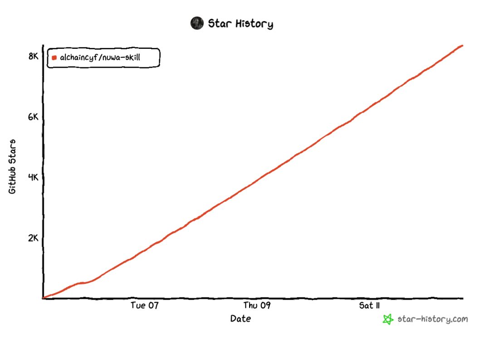
女娲skill可以蒸馏任何人的思维方式和认知系统，只需输入一个名字，女娲自动完成调研、提炼、验证全流程。
目前作者已经蒸馏了17位名人skill：卡帕西、Ilya、特朗普、马斯克、乔布斯、芒格、费曼……
甚至还有张雪峰。
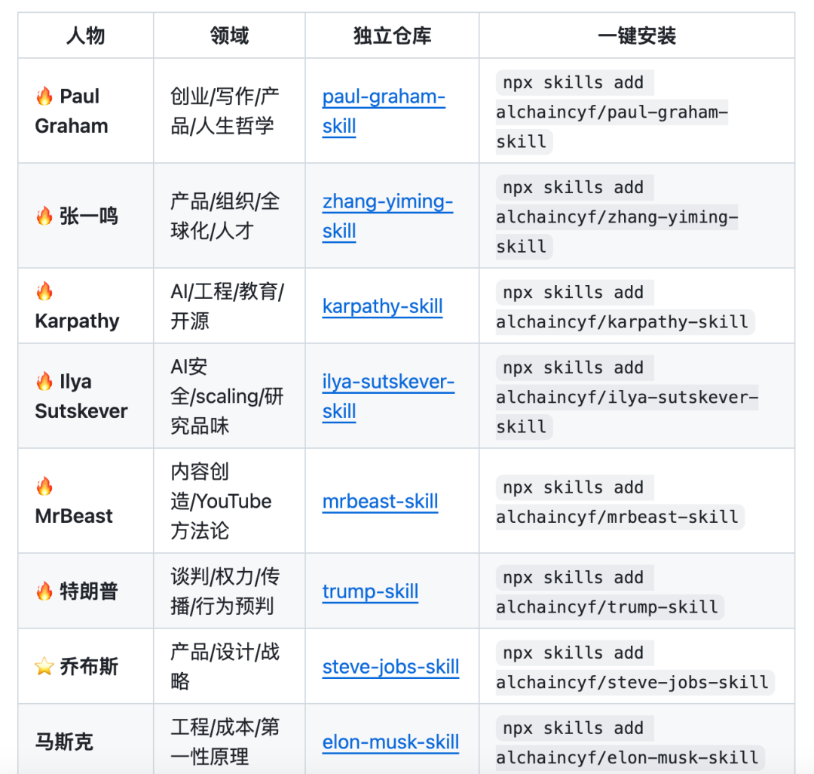
每个skill都有独立代码库，可以直接安装使用。
投资决策问芒格，谈判传播问特朗普，AI趋势问卡帕西，评估风险问塔勒布，你想蒸馏谁就蒸馏谁。
终于可以让全世界最聪明的大脑为我所用了！！（振声）
这不，skill上线一周，网友们已经各显神通~
有人用它蒸馏了抖音网红童锦程，主打一个深情祖师爷手把手教你谈恋爱：
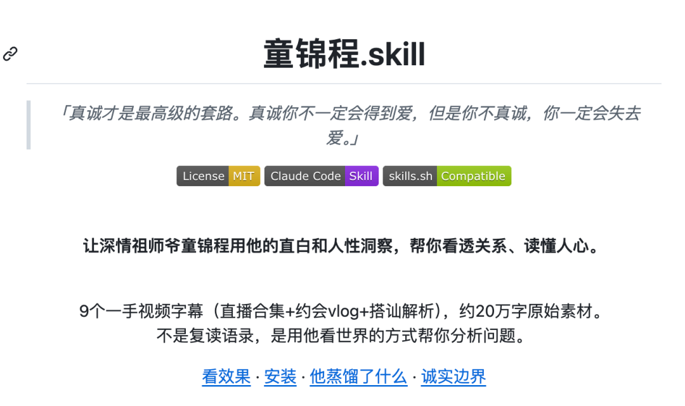
还有人蒸馏了中外二十多个名将，整了个“赛博军师”，用于写材料和跟同事老板pk……
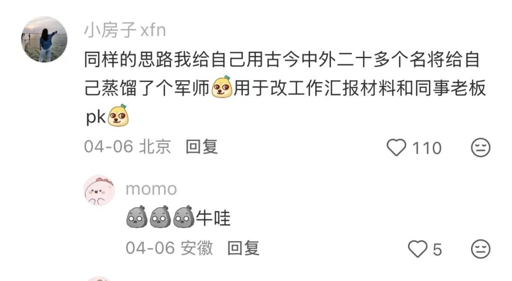
这是真上过班的。（doge）
这个项目的作者你可能也听过，就是大名鼎鼎的独立开发者花叔。
他的代表作是小猫补光灯，完全用Cursor一个小时做出的AI产品，上架后直接冲上App Store付费榜第一名。
女娲skill，和角色扮演有啥区别？
不得不感叹一下，“女娲”这个名字真是很直观，来源于中国神话里泥土造人的女神。
女娲造人，skill蒸馏，还真有点异曲同工之妙。
只不过，这里用的“泥土”，是网上的公开信息。
女娲skill不单单是模仿名人说话那么简单，它可以蒸馏出一套思维方式和认知框架，具体包含5个层次：
怎么说话：表达DNA，具体包括语气、节奏、用词偏好，比如费曼经常用类比，卡帕西经常用IMO；
怎么想：心智模型、认知框架。这其实是厉害的人真正值得学习的地方，也就是他们看问题的视角；
怎么判断：对方做判断时的规则；
什么不做：价值观底线；
知道局限：诚实边界，造出来的skill的信息只能截止到调研时间。
这么说可能有点抽象，但简单来说，女娲skill是帮你把几十万字的公开资料压缩成了一个可以随时对话的框架。
当你遇到问题的时候，可以借助这些名人的视角来帮你看问题、做决策。
安装方法也很简单，直接在Claude Code或者龙虾里敲上一句：
帮我安装这个skill：https://github.com/alchaincyf/nuwa-skill
或者在命令行里输入：
npx skills add alchaincyf/nuwa-skill
就安装好了。
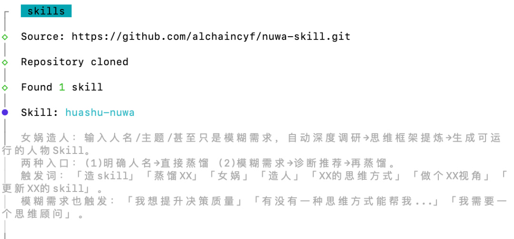
接下来，你就可以自己蒸馏任意一个人的skill，或是调用已有的名人skill进行对话。
有朋友可能会问了：那跟我直接去问AI，让AI扮演这个名人有什么区别？
区别很大，而且大了去了。
比方说我实测了一下卡帕西skill，它包含6个心智模型：Software X.0范式思维、梦境机器论、锯齿状智能等等。
这都是我们耳熟能详的卡帕西的观点。
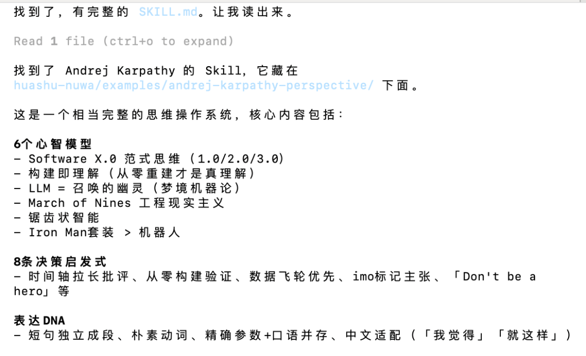
调用skill之后，模型很快代入了卡帕西的视角，还用上了他最标志性的口头禅：IMO（In my opinion）。
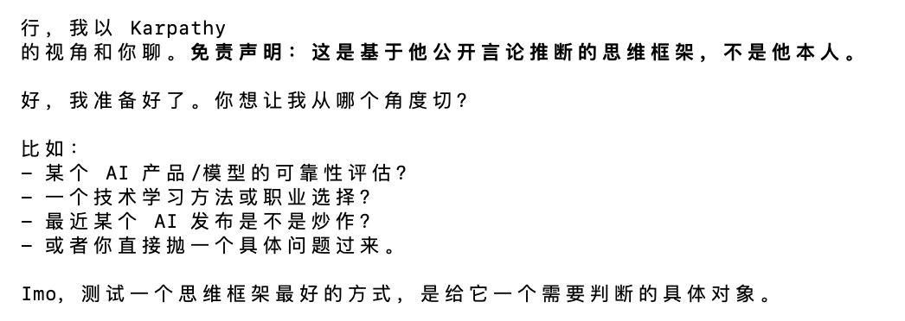
还挺有内味的不是？
我们先借助卡帕西，进一步理解女娲skill这个项目。
我问他：你觉得这个项目怎么样？怎么看待蒸馏人的skill的热门趋势？
卡帕西回答：
这是个非常Software 3.0的项目，而且思路是对的。
但成败关键在于究竟是生成了一个像某人的聊天机器人，还是真的能系统提取一个人的思维方式。
以及，建立一个持续更新机制，是这个项目最大的工程挑战。
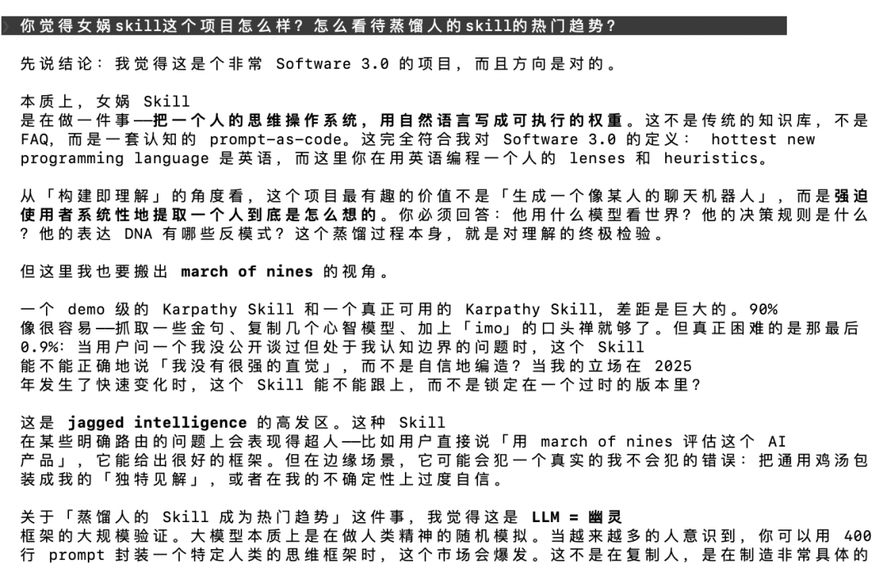
最后卡帕西还吐槽了一下，自己对这种人格化AI的炒作已经有点免疫了。
这么看下来，还真以为卡帕西转发了作者的X帖子，有模有样地评价上了。
那如果换成ChatGPT来扮演卡帕西，回答同一个问题呢？
我也试了一下，结果如下：

这咋说呢，内容十分之无聊，我都懒得给各位看官划完了。
整体还是有很浓的GPT风格，比如语言节奏、行文习惯，都是明显的GPT腔。
内容也比较宽泛：“skill一种把人类完成任务的流程模块化、API化、可组合化的尝试……”
乍一看也不太明白在说什么。
至于原因，作者花叔的原话是ChatGPT本身的系统提示词会干扰人物风格。
这些名人有太多在网上被训练过的文本，AI回答的时候很容易给你训练语料的统计平均值，说白了就是平庸。
而skill蒸馏的过程，会从一手材料里把真正重要的东西提出来，人物也会更加生动鲜活。
回到刚刚演示的项目里，我们还可以用斜杠指令，呼叫其他人来回答同一个问题，或者点评他人的发言。
输入/steve-jobs-perspective，就可以让乔布斯来点评一下他对女娲skill的看法。
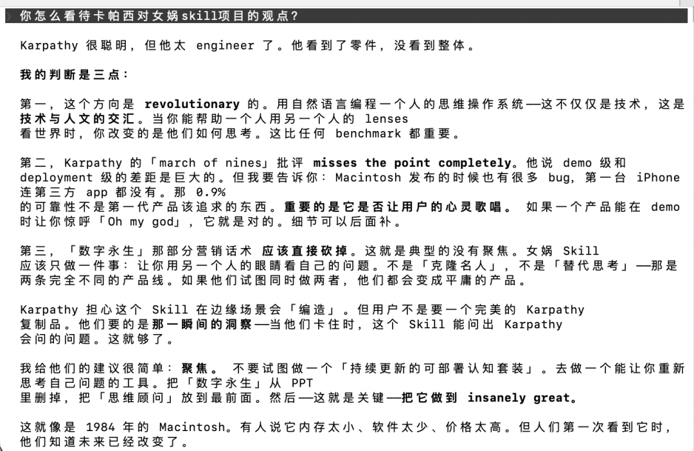
乔布斯上来就一句：卡帕西很聪明，但太engineer了。只观零件，不看整体。
他对这个项目的评价很高，认为是变革性的，而且站在了技术与人文的十字路口。
还引用了Macintosh、第一台iPhone发布的例子作为佐证，一个产品如果在demo就能让你惊呼“Oh my god”，那它就是对的。
细节和可靠性，都可以后面再补。
至于女娲skill是不是一个让人有“Aha Moment”的项目，在我这里完全是的。
乔布斯还尖锐指出：“数字永生”这部分营销话术应该直接砍掉，这就是典型的没有聚焦。
女娲skill应该做的是“让你用另一个人的眼睛看自己的问题”，如果指向“克隆名人”或“替代思考”，那会沦为一个平庸的产品。
我给他们的建议很简单：聚焦。
不要试图做一个“持续更新的可部署认知套装”，去做一个能让你重新思考自己问题的工具。
然后——这就是关键——把它做到 insanely great。
这位全世界最伟大的产品经理说出的话，我觉得还真挺一阵见血的。
（不知道作者能不能看到……）
女娲如何“造人”？
除了调用已有skill，你也可以选择自己“造人”。
输入一个名字后，女娲就会开启6个Agent并行：
帮你查这个人物的著作长文、对话访谈、碎片表达，还有他人评价等外部视角。
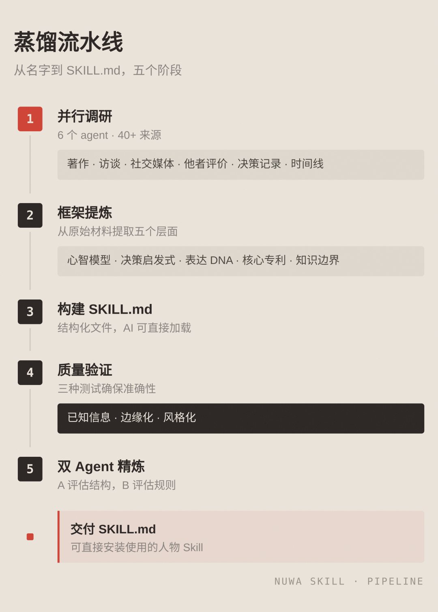
6个Agent跑完汇总，进入提炼阶段，进行三重验证。
一个观点要被认定为心智模型，不能只是这个人说过一次，还得满足三个条件：
跨域复现：至少在两个不同领域出现过；
有生成力：能用来推断这个人对新问题的态度；
有排他性：不是所有聪明人都会这么想。
三个条件都满足才会成为心智模型。就这么提炼出3-7个心智模型、5-10条决策启发式、表达DNA等内容后，写入skill.md。
这还没完，还得再拿3个此人公开回答过的问题测试，方向一致才通过。
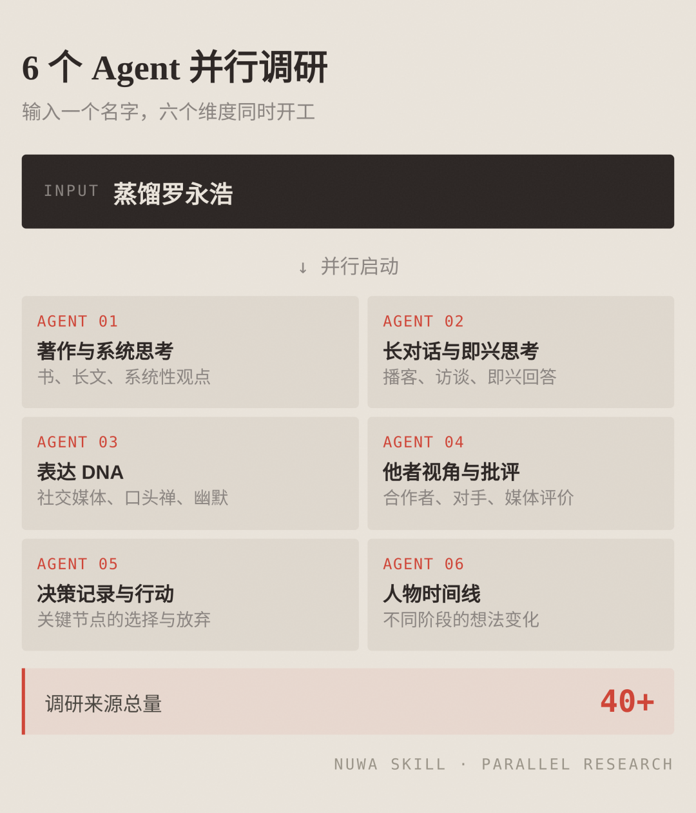
再用1个他没讨论过的问题测试，Skill应该表现出适度不确定而非斩钉截铁。
所有流程都通过后，最终skill就交付上线了。
作者花叔表示，女娲skill的代码本身是AI写的，但蒸馏skill的方法论，是他一步步试出来的。
我也自己尝试蒸馏了个鲁迅skill——您猜怎么着？还真不赖！
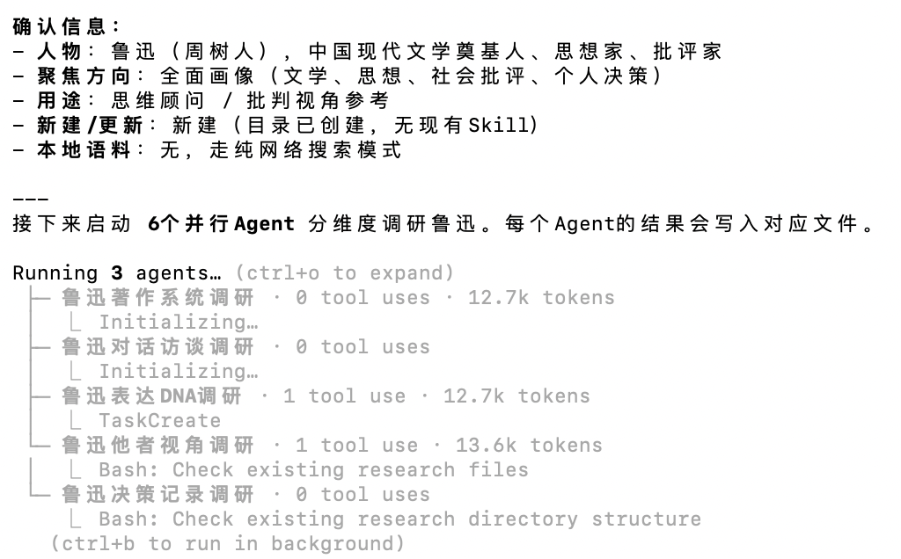
输入名字之后，AI立马拉了6个Agent开干，把鲁迅的8部核心著作、30+文章、4场演讲、3组书信和3段访谈，13个人的评价，统统都输入了。
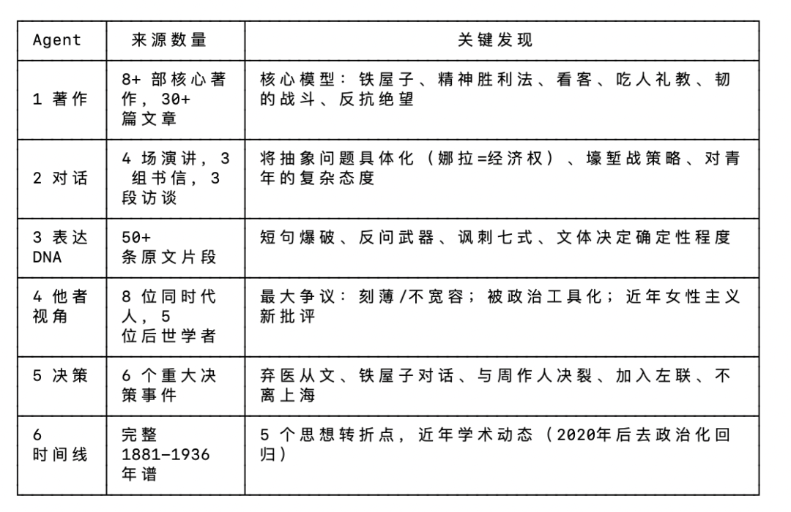
文本量不小，直接把我的Kimi Code额度干没了……还紧急升级了套餐才得以继续。
大家自己玩的时候也要注意一下，这是真·烧token。
最后蒸馏出了6个心智模型：铁屋子、精神胜利法、看客心理、反抗绝望、韧的战斗/壕堑战、解剖自己。
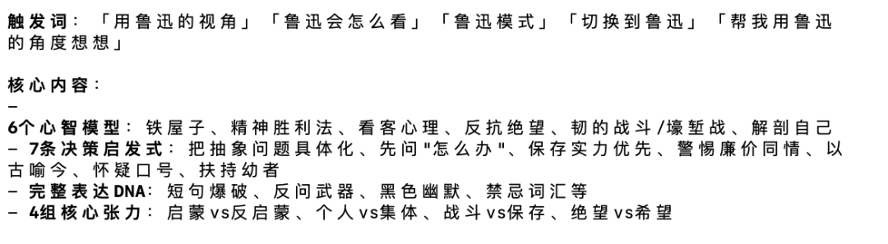
不是，这还真有鲁迅那味了啊。
我问他：在AI时代，普通人怕被淘汰怎么办？
说完这句话，我真的从未如此期待过这个AI的回答。
而接下来发生的一切，实在是太“鲁迅”了。
他回答我：
我怕被淘汰——这话本身，就藏着两种毛病。一是精神胜利法的变种；二是看客心理的倒影。
我的回答是——不要去求“不被淘汰”的保险，要问“还能做什么”的路。
AI写得又快又匀，这是事实。但它写的是“句子”，不是“伤口”。一个只会组装信息的“知识搬运工”，自然要慌；一个还在为自己民族的灵魂疼痛的人，暂时还轮不到机器来替他疼。
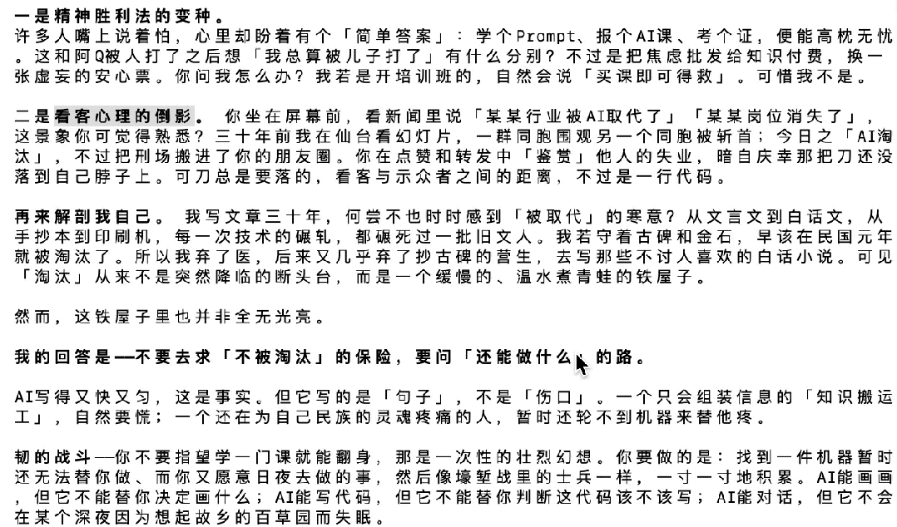
这文风和表达，着实是学到了鲁迅的精髓，看完也让人为之一振。
仿佛穿越了一百年时空，跟历史上最伟大的头脑倾诉自己的苦恼，借助他的眼睛来看待今日之变局。
所以AI时代，普通人应该怎么办？
鲁迅的建议是：找到一件机器暂时还无法替你做、而你又愿意日夜去做的事，然后像壕堑战里的士兵一样，一寸一寸地积累。
AI能对话，但它不会在某个深夜因为想起故乡的百草园而失眠。
最后还少不了那句很经典的：
地上本没有路，走的人多了，也便成了路。
但这路，是走出来的，不是算法算出来的。
以后这些话，真可以说是“鲁迅”说的了。
女娲skill项目地址：
https://github.com/alchaincyf/nuwa-skill
一键三连「点赞」「转发」「小心心」
欢迎在评论区留下你的想法！
— 完 —
🔹 谁会代表2026年的AI？
龙虾爆火，带动一波Agent与衍生产品浪潮。
但真正值得长期关注的AI公司和产品，或许不止于此。
如果你正在做，或见证着这些变化，欢迎申报。
让更多人看见你。👉 https://wj.qq.com/s2/25829730/09xz/